Operating Documentation
Direction 5133330-3, Rev# 14
Signa EXCITE HD 3.0T Service Methods
Module Version 3.0, Version Date 6/2/08
Operating Documentation |
| Required Persons | Preliminary Reqs | Procedure | Finalization |
|---|---|---|---|
| 2 |
| Item | Qty | Effectivity | Part# | Manufacturer | |
|---|---|---|---|---|---|
| Universal Lift Hoist Kit with Gradient Attachments | 1 | - | 46-317266G6, G7, G8 or G9 | - | |
| Phillips-head Screwdriver | 1 | - | - | - | |
| Straight-edge Screwdriver | 1 | - | - | - | |
| Digital Multimeter with High-Voltage Probes | 1 | - | - | - | |
| ||||
| FATAL ELECTRIC SHOCK HAZARD! | ||||
| THE Gradient CABINET/PDU CONTAINS HIGH VOLTAGE. | ||||
| TO PREVENT FATAL ELECTRIC SHOCK, DISCONNECT POWER FROM THE PDU BEFORE Performing THE FOLLOWING PROCEDURES. PERFORM LOCKOUT/TAGOUT PER GE OSHA LOCKOUT/TAGOUT REQUIREMENTS LISTED IN THE FIELD SERVICE EHS MANUAL and TRAINING 2000, P/N 2135387-200. |
| ||||
| FATAL ELECTRIC SHOCK HAZARD! | ||||
| there is potential 800 volts on capacitors. | ||||
| wait at least 5 minutes after turning off power to power supply before servicing. |
| ||||
| POSSIBLE PERSONAL INJURY. | ||||
| CABINET TIP HAZARD. | ||||
| CONFIRM THAT THE ALUMINUM ANTI-TIP LEGS STORED IN THE REAR OF THE CABINET ARE INSTALLED ON EITHER SIDE OF THE BASE OF THE CABINET BEFORE ATTEMPTING TO REMOVE AN Amplifier. |
| ||||
| Possible Personal injury. | ||||
| Heavy object - The Hoist Kit weighs 73 lbs (33 kg). | ||||
| Assistance to lift this product [mechanical (Dollies) or Additional personnel] is required. |
| ||||
| Possible Personal injury. | ||||
| Heavy object - The power supply with case weighs approximately 240 lbs (109 kg). | ||||
| Assistance to lift this product [mechanical (Dollies) or Additional personnel] is required. |
Perform the Gradient Lock Out Tag Out.
Using the screws included with the anti-tip legs, secure the aluminum anti-tip legs to the threaded holes on each side of the base of the Gradient Cabinet. (See Illustration 1.)
Illustration 1: Installing Anti-Tip Legs on Sides of Cabinet
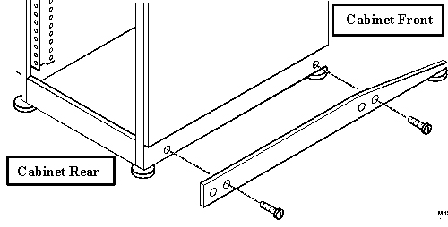
Remove the four pin connectors (J1, J2, J3, J4, J5 and J6) from the rear of the Amplifier Power Supply Module. (See Illustration 2.)
Remove the data cable (J7) from the rear of the Amplifier Power Supply (Amplifier-PS) Module. (See Illustration 2.)
Disconnect the TS1 terminal. (See Illustration 2.)
Illustration 2: Amplifier Power Supply - Rear Connections
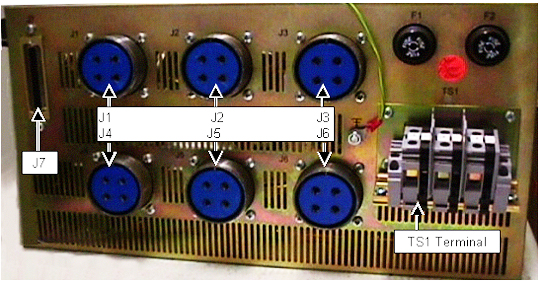
Locate the three (3) large Steel Rail sections in the Universal Hoist Kit, and place them on a flat surface for assembly. (See Illustration 3.)
Illustration 3: Steel Rail Sections, Hex Bolts and Hex Nuts
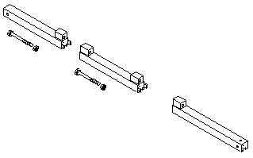
Arrange the rail sections in the proper order (rear, center, then front), and fasten them together with 4.75 in. x 0.5 in. caps crews and hex nuts.
Use the crescent wrenches to tighten the cap screws.
Locate the brass-colored Inner Rail, and insert it into the steel rails as shown in Illustration 4.
Illustration 4: Assembled Steel Rails and Brass-Colored Inner Rail
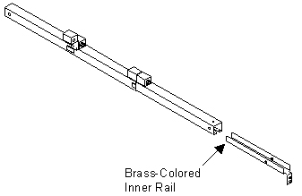
Insert the brass-colored Inner Rail into the open end of the rear rail section.
Locate one of two (2) locking pins in the lift kit, and insert one locking pin into the hole near the open end of the rear rail section. (This locking pin secures the brass-colored Inner Rail to the outer Steel Rail. See Illustration 5.)
Illustration 5: Rear Steel Rail, Locking Pin and Brass-Colored Inner Rail
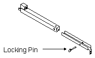
Place the Steel Rail assembly on top of the Fan Enclosure at the top of the Gradient Cabinet, and center the Rail Assembly on the top of the enclosure. (See Illustration 6.)
Illustration 6: Positioning of Steel Rail Assembly
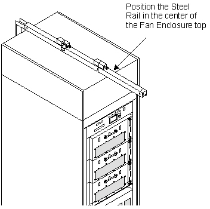
Locate the brass-colored J-shaped bracket in the Lift Kit. (See Illustration 7.)
Illustration 7: J-Shaped Bracket
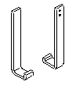
Open the rear door of the Gradient Cabinet, and observe how the J-shaped bracket fits into the rear doorframe. (See Illustration 8.)
Illustration 8: Positioning of J-Shaped Bracket
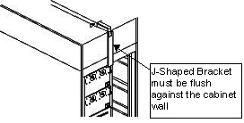
Slide the Rail Assembly toward the front of the Gradient Cabinet maintaining its centered position.
Attach the J-shaped bracket to the brass-colored Inner Rail so that the J-shaped bracket is flush against the rear panel of the Fan Enclosure; use the flat Phillips-head screws to secure the J-shaped bracket to the brass-colored Inner Rail. (See Illustration 9.)
Illustration 9: Connection of J-Shaped Bracket to Steel Rail Assembly
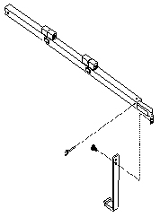
Once the J-Shaped Bracket is secured to the cabinet and the Steel Rail, attach the Saddle Bracket to the top of the Fan Enclosure. (The screw holes are located at the front end of the Fan Enclosure. The Saddle Bracket prevents the Steel Rail from sliding from center position. See Illustration 10.)
Illustration 10: Positioning and Attachment of Saddle Bracket
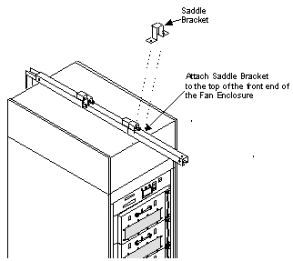
Locate the Hoist Assembly in the Lift Kit. (See Illustration 11.)
Illustration 11: Hoist Assembly
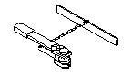
Insert the Hoist Assembly into the open end of the front rail, and insert a locking pin into the holes near the front edge of the front rail. (This locking pin prevents the Hoist Assembly from sliding out of the rails. See Illustration 12.)
Illustration 12: Placement of Hoist Assembly into Front End of Steel Rail Assembly
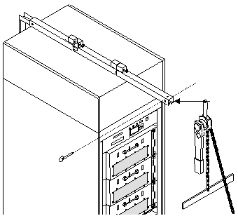
Remove the four (4) Phillips-head screws and washers from the Amplifier-PS front panel that secures the Amplifier-PS to the Gradient Cabinet. (See Illustration 13.)
Illustration 13: Screw Location on Amplifier-PS Front Panel
Pull out the Amplifier-PS Module until its slide rails latch.
Remove the two Amplifier-PS brackets from the Universal Hoist Kit. (See Illustration 14.)
Illustration 14: Gradient Amplifier-PS Hoist Brackets
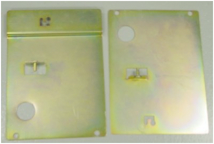
Place the appropriate bracket (labeled left and right) into the hole on the lip of the sheet metal on each side of the Amplifier-PS. (See Illustration 15.)
Illustration 15: Location of Hoist Bracket Placement Hole
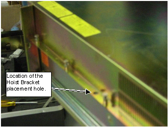
Locate the stabilizer bars in the Hoist Kit. (See Illustration 16.)
Illustration 16: Location of Stabilizer Bars in Hoist Kit
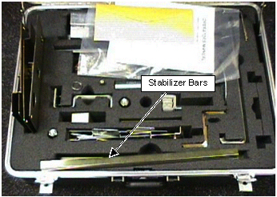
Using four screws from the hoist kit, and attach the stabilizer brackets to the bottom of both hoist brackets. (See Illustration 17.)
Illustration 17: Attaching Stabilizer Bars to Hoist Brackets
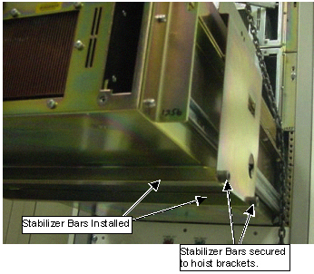
Attach the spreader bar of the hoist assembly to the Amplifier Hoist Brackets. This transfers the weight of the Amplifiers to the hoist. (See Illustration 18.)
Illustration 18: Attaching Spreader Bar to Hoist Brackets
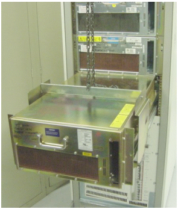
On the Hoist Assembly, tighten the chain to the spreader bar to remove slack and support the weight of the Amplifier module. (See Illustration 19.)
Illustration 19: Transferring Weight to Hoist Assembly
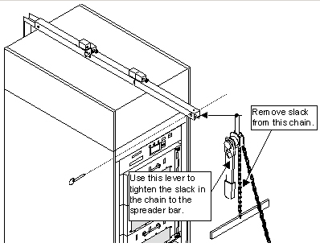
Place the rail lever in the UP position on both sides of the Amplifier-PS. (SeeIllustration 20 for location of lever.)
Illustration 20: Rail Lever Location
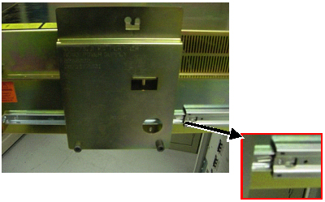
Ensure that the entire weight of the Amplifier-PS is supported by the Universal Hoist.
Slide the module out, and remove it from the rails attached to the cabinet.
Turn the module to the side and lower the module. (See Illustration 21.)
Illustration 21: Module Turned to Side
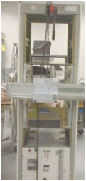
Remove the spreader bar from the hoist brackets
Remove the hoist brackets from the failed module.
Remove the rails from the failed module, and attach to the replacement module. (See Illustration 22.)
Illustration 22: Attaching Rails to Amplifier-PS
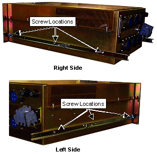
Attach the hoist brackets to the replacement module.
Attach the spreader bar to the hoist brackets.
Fully extend the slide rail in the cabinet of the axis that is being replaced.
Raise the replacement Amplifier using the hoist assembly, and move module in position to place rails into the slide mechanism on the cabinet.
Install the Amplifier-PS into the cabinet by inserting the module into the mating half of the rail assemblies.
Place the slide-rail lever in the DOWN Position. (See Illustration 23.)
Illustration 23: Rail Level Location
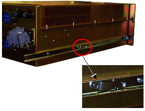
Push the Amplifier-PS assembly all the way into the cabinet.
Remove the spreader bar from the hoist brackets.
Remove the hoist brackets.
Secure the assembly to the front panel by replacing the four (4) Phillips-head screws and washers from the Amplifier-PS front panel. (See Illustration 24.)
Illustration 24: Screw Location on Amplifier-PS Front Panel
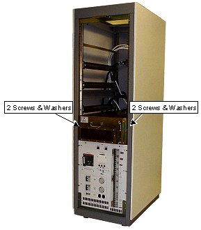
Replace the four pin connectors (J1, J2, J3, J4, J5 and J6) at the rear of the Amplifier-PS Module. (See Illustration 25.)
Replace the data cable (J7) at the rear of the Amplifier-PS Module. (See Illustration 25.)
Connect the TS1 terminal. (See Illustration 25.)
Illustration 25: Amplifier Power Supply - Rear Connections
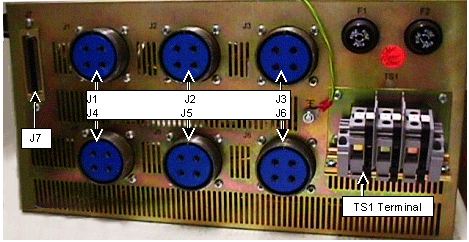
Remove the Universal Hoist from the cabinet and return to the kit.
Remove the power Lockout/Tagout to the Gradient Cabinet and restore power.
Power up the cabinet.
Set up for a scan to verify gradient driver comes up to Ready.